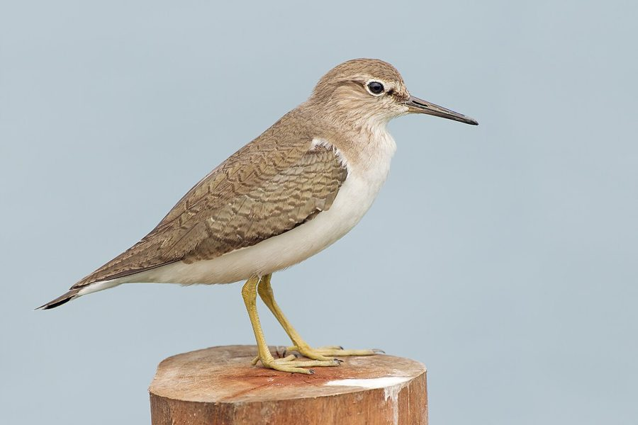

छोटा बटानCommon Sandpiper
Actitis hypoleucos · Scolopacidae · BRD-0063

- Scientific name
- Actitis hypoleucos (Linnaeus, 1758)
- Family
- Scolopacidae
- Hindi
- छोटा बटान
- Status here
- native
- IUCN
- LC
When to look कब देखें
Present all year.
छोटा बटान / Common Sandpiper
Actitis hypoleucos (Linnaeus, 1758) — Scolopacidae
छोटा बटान (कॉमन सैंडपाइपर / जल-बालक) — पूर्वी उत्तर प्रदेश की नदियों के किनारों, नहरों के मिट्टी वाले किनारों और खेतों के पास पाया जाने वाला एक छोटा, अत्यंत फुर्तीला और आम जलीय पक्षी (wader) है। यह उत्तर प्रदेश में एक आंशिक प्रवासी (partial migrant) है; इसकी स्थानीय आबादी वर्षभर बड़ी नदियों के किनारे पाई जाती है, लेकिन सर्दियों (सितंबर से मार्च) में हिमालय से आने वाले प्रवासी पक्षियों के कारण इनकी संख्या काफी बढ़ जाती है। इसकी सबसे बड़ी पहचान इसकी पीठ का मटमैला भूरा रंग और पेट का साफ़ सफ़ेद रंग है, तथा इसकी विशेष शारीरिक क्रिया है जिसमें यह ज़मीन पर चलते समय लगातार अपनी पूंछ को ऊपर-नीचे हिलाता (constantly bobbing its tail) रहता है। उड़ते समय यह पानी की सतह से बिल्कुल सटकर, अपने मुड़े हुए पंखों को हिलाते हुए (bowed wings flight) तेज़ और सीधी उड़ान भरता है। उड़ान के दौरान इसकी तीखी और पतली आवाज "ट्वी-ट्वी-ट्वी" (clear call "twee-twee-twee") को आसानी से पहचाना जा सकता है।
Quick Identification त्वरित पहचान
| Feature | Description |
|---|---|
| Size | Small, active shorebird (19–21 cm total length); relatively short greyish-green legs |
| Tail-bobbing | Diagnostic behaviour of constantly bobbing the tail and rear body up and down |
| Colouration | Olive-brown upperparts; pure white underparts with a distinct pale greyish-brown smudge on breast-side |
| Flight | Low, fast flight on stiff, bowed wings alternating with short glides; shows a white wing bar |
| Bare Parts | Bill is straight, medium-length, grey-brown; irises are dark brown |
| Habitat | Found singly on muddy river edges, canal banks, and village pond margins |
Field tip: Look along the mud or sand banks of local rivers and canals. Watch for a small brown-and-white bird walking quickly along the water's edge, continuously bobbing its tail up and down. If it flies, notice its stiff, downward-curved wings and listen for a high "twee-twee-twee" call. The female resembles the male and is shown in the field tip.
Morphology आकारिकी
Biometrics (typical measurements in the northern Indian plains):
| Measurement | Range |
|---|---|
| Total length | 190–210 mm |
| Wing (flattened chord) | 105–115 mm |
| Tail | 50–60 mm |
| Tarsus | 22–26 mm |
| Bill (culmen from base) | 24–28 mm |
| Weight | 35–60 g |
Plumage: The upperparts are uniform olive-brown with faint dark streaks and bars. The underparts are pure white, except for a distinct brownish-grey smudge or patch on the sides of the breast, which frames the white shoulder. In flight, a bold white wing-bar is visible along the middle of the secondaries, and the outer tail feathers are white with dark bars.
Bare parts: The bill is straight, blackish-grey, with a lighter brown base. The irises are dark brown. The legs and feet are greyish-green or pale olive-green.
Vocalisations
Common Sandpipers are highly vocal in flight.
- Flight call: A high, clear, piping whistle: twee-twee-twee or titti-tee-tee, repeated rapidly as it flies off.
- Alarm call: A sharp, metallic piet or peet, uttered when startled from riverbanks.
Behaviour & Ecology व्यवहार और पारिस्थितिकी
- Tail-bobbing action: Constantly bobs its tail and rear body when walking or feeding. This is the primary identification behavior. It is believed to help camouflage the bird's silhouette against moving water ripples or assist in judging visual distances.
- Bowed-wing flight: When flushed, it flies very low over the water surface, holding its wings stiffly curved downward (bowed wings), flapping rapidly for a few seconds, then gliding briefly.
- Solitary feeding: Forages singly along muddy banks, walking quickly and picking small insects, worms, and crabs from the surface of mud or wet sand. It is territorial on its wintering grounds, chasing away other sandpipers.
Life Cycle / Phenology जीवन चक्र
- Breeding: Breeds mainly in the Himalayas and across temperate Eurasia. They breed near gravelly mountain streams and upland lakes from May to August. Sighting records of juveniles suggest occasional breeding of resident pairs along larger northern Indian rivers.
- UP migration calendar: The wintering population from the Himalayas and Central Asia arrives in Basti by late September and early October. They remain along riverbanks and canals until late March or April, after which they migrate north.
- Nesting in breeding range: Builds a simple nest scrape on the ground near water, hidden in low grass or under bushes, lined with leaves.
Host Plants or Prey आहार
Primary food items:
- Insects: Water beetles, fly larvae, midge pupae, ants, sand crickets, and bugs.
- Invertebrates: Small earthworms, aquatic worms, and tiny freshwater crabs.
- Amphibians: Small tadpoles and young grass frogs.
Predators / Natural Enemies शत्रु
- Raptors: Shikras (Accipiter badius), falcons, and marsh harriers prey on feeding sandpipers.
- Corvids: House Crows (Corvus splendens) mob perched sandpipers and steal their food.
- Mammals: Jackals and mongoose hunt them at the water margins.
- Co-wetland species: Shares wetland habitat with wading predators like the Grey Heron (Ardea cinerea), which can occasionally target small waders as prey.
Agricultural / Human Relevance कृषि प्रासंगिकता
Natural insect controller. By consuming insect larvae and pupae along irrigation canals and wet fields, Common Sandpipers help reduce agricultural pests.
Conservation and legal status: Protected under Schedule IV of the Wildlife Protection Act, 1972. They are generally adaptable to human-modified banks (like concrete canal banks) but are threatened by industrial water pollution, dumping of plastics along riverbeds, and disturbance from sand mining.
Expected Locally स्थानीय रूप से अपेक्षित
Not a field record. Written from published accounts for eastern Uttar Pradesh. No confirmed local sighting yet — if you have seen it, that is what the atlas needs.
अभी तक स्थानीय पुष्टि नहीं। यह विवरण प्रकाशित स्रोतों से है, किसी अवलोकन से नहीं।
A very common wader throughout the Basti district. They can be found singly along the banks of the Ghaghra and Rapti rivers, canal embankments, and village pond margins in all blocks. They are frequently seen walking quickly on concrete step embankments (ghats) near village temple ponds.
Distribution वितरण
Global range: Breeds in temperate Europe and Asia; migrates south to winter in Africa, South Asia, Southeast Asia, and Australia.
In India: A widespread resident and abundant winter visitor to all wetlands, canals, and riverbanks.
In Uttar Pradesh: A common state-wide resident and winter visitor along all watercourses.
In Basti district / eastern UP: Regularly recorded year-round near river channels and canals in all blocks.
Research Questions शोध प्रश्न
Anyone can investigate these | कोई भी इन प्रश्नों की जाँच कर सकता है
- How many times per minute does a Common Sandpiper bob its tail when walking on sand versus concrete ghats? — Count and compare bobbing rates.
- What is the territory length (in meters of riverbank) defended by a wintering Common Sandpiper in Basti? — Map and measure individual foraging ranges.
- Do Sandpipers prefer feeding in flowing river channels over stagnant village ponds in your block? — Compare seasonal counts.
- How do Sandpipers respond to the sudden hunting flights of nearby Shikras? — Document flight and escape patterns.
- Does the wintering population of Sandpipers in Basti show an increase after high monsoon river levels recede? / क्या मानसून के बाद नदी का जलस्तर घटने पर बस्ती में छोटा बटान की शीतकालीन आबादी में वृद्धि होती है? — Conduct monthly counts from August to December.
Similar Species मिलती-जुलती प्रजातियाँ
| Species | Key Difference | हिंदी |
|---|---|---|
| Green Sandpiper (Tringa ochropus) | Darker blackish-green upperparts; white rump visible in flight; lacks white wing-bar; does not bob tail as persistently | हरा बटान — गहरी पीठ, सफ़ेद पूँछ का मूल भाग |
| Wood Sandpiper (Tringa glareola) | Prominently spotted upperparts; distinct white supercilium; longer, yellowish legs; lacks white wing-bar | चित्तीदार बटान — पीठ पर सफ़ेद धब्बे, लंबी पीली टांगे |
| Little Ringed Plover (Charadrius dubius) | Double black-and-white breast band; yellow eye ring; shorter bill; runs in quick dashes | छोटा बटेर — छाती पर काला पट्टा, पीली आँख का घेरा |
Field rule: Small shorebird with olive-brown upperparts, white belly with a greyish smudge on the breast-side, constantly bobbing its tail, and flying low with stiff, bowed wings is a Common Sandpiper.
Taxonomy & Classification वर्गीकरण
Original description. Carl Linnaeus described the Common Sandpiper as Tringa hypoleucos in 1758 in his Systema Naturae (ed. 10, vol. 1, p. 149). The type locality was Sweden. Illiger placed it in the genus Actitis in 1811. The genus name Actitis is from the Ancient Greek aktites, meaning a coast-dweller. The specific name hypoleucos comes from the Greek hupo-(beneath) and leukos(white), referencing its pure white belly.
Subspecies. Monotypic — no subspecies are currently recognised.
Family and order placement. Placed in the order Charadriiformes, family Scolopacidae (sandpipers and allies), subfamily Tringinae.
Phylogenetic notes. Actitis hypoleucos forms a sister group to the Spotted Sandpiper (Actitis macularius) of the Americas, with which it diverged during the late Miocene.
IUCN status rationale. Listed as Least Concern (LC) due to its massive global range and stable population, showing high resilience to human-modified shorelines.
Photo Gallery फोटो गैलरी
References संदर्भ
- Linnaeus, C. (1758). Systema Naturae. Tenth Edition. Holmiae, p. 149. [original description]
- Ali, S. & Ripley, S. D. (1999). Handbook of the Birds of India and Pakistan. Vol. 2. Oxford University Press, New Delhi.
- Grimmett, R., Inskipp, C. & Inskipp, T. (2011). Birds of the Indian Subcontinent. 2nd ed. Christopher Helm, London.
- Hayman, P., Marchant, J. & Prater, T. (1986). Shorebirds: An Identification Guide to the Waders of the World. Christopher Helm, London.
- BirdLife International (2024). Actitis hypoleucos. IUCN Red List of Threatened Species. Ver. 2024.
- GBIF Occurrence Data — Actitis hypoleucos, Uttar Pradesh (2010–2025).
Source file: species/fauna/birds/common_sandpiper.md